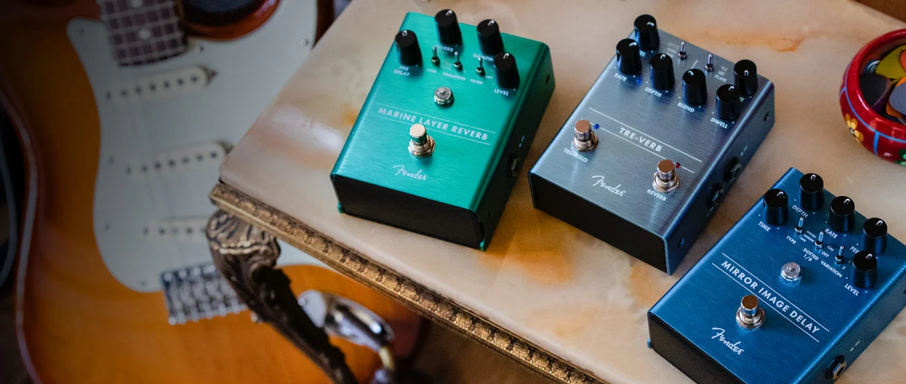

Earlier this year, I got to check out an all-new lineup of guitar effects pedals from Fender. Fender is among the most famous brands in the music world — but although its iconic Stratocasters and Telecasters need no introduction, and its amplifiers are equally legendary, it has never been known for effects pedals
It was an understandable omission. The pedal universe of one of often obscure and esoteric boutique boxes sharing space with dominant players, such as Boss and MXR. But the popularity of pedals has surged in the past decades, and the good-old plug-in-and-play philosophy of many seasoned guitarists have given way to a sonic landscape where the six-string is competing with electronic and digital instruments.
The modern axe-wielder needs to shape his or her sound a lot more extensively than Keith Richards (a Telecaster legend) ever did. Just look at the legacy of U2's Edge, who has never relied on a dry signal between any of his many guitars and any of his many amps.Fender has entered the pedal fray with six units: overdrive, distortion, reverb, delay, compression, and buffer (the last two are aimed at gigging musicians more than basement warriors).
The company loaned me a Santa Ana Overdrive, a Pugilist Distortion, and a Marine Layer Reverb to try out at a more leisurely pace. More are coming, lest anyone think Fender isn't serious about this category. A "Pelt Fuzz", "Full Moon Distortion" and "Engager Boost" will arrive in the market shortly. The fuzz pedal is of particular interest for me. To test out this stuff, Fender also lent me my preferred Fender setup: a new American Professional Telecaster and a Pro Junior IV amp.
Guitar effects pedals are often the link between taking your direct guitar to amp sound to another level. Whether performing on stage or experimenting in the garage or studio, electric guitar effects pedals and processors can get the absolute most out of your guitar and take your music to another place. Different effects such as overdrive, distortion, fuzz and boost can help sculpt your tone and add dimension and attitude to your sound; time based effects such as delay, echo and reverb can make your guitar sound expansive and modulation and octave based effects such as a phaser, tremolo, chorus, flanger and pitch shifters can add movement or even transfer your sound into something that doesn’t even sound like a guitar any more. Compound all these different sounds with loop pedals and multi-effects and the options for different colours and textures that you can get out of your electric guitar or bass is never ending. Discover the guitar pedals and processors available to buy from World of Music.
At World of Music we carry a varied selection of pedals and processors from some of the some of the biggest pedal manufacturers such as Boss, Electro Harmonix, TC Electronic, Strymon, Jim Dunlop and MXR as well as a huge range of boutique pedals from brands such as Earthquaker Devices, Fulltone, Z Vex, Death By Audio, Old Blood Noise Endeavors, Walrus Audio, Empress Effects and more. We carry a huge range in store so whether you’re looking for something relatively simple to try out on stage or really want to experiment, we have models to suit any specific needs and our expert staff can help you out find the sound that you’re after. We deliver right across Australia so browse our range of effects pedals and accessories and place your order online with us today.